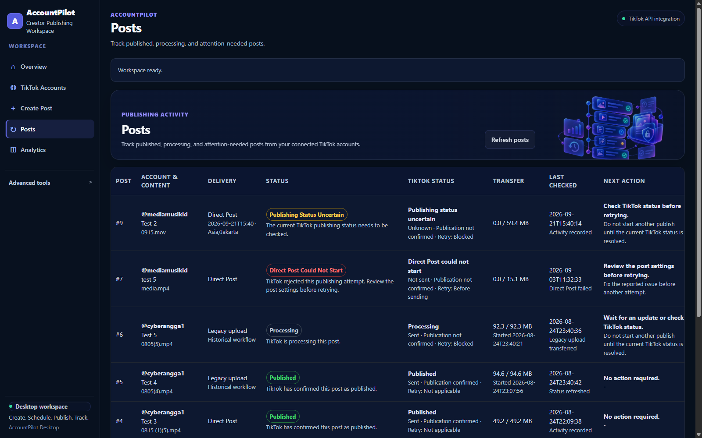

Creator authorization. Current settings. One final action.
AccountPilot's TikTok publishing flow is designed around explicit creator choices: connect an authorized creator, select local media, load current TikTok publishing settings, choose supported options, then Publish now or Schedule post.

The selected creator and publishing choices stay visible.
AccountPilot uses the creator-selected local video for the configured FILE_UPLOAD workflow and keeps destination, caption, cover, privacy and supported interaction choices visible before the final Direct Post action.
Open the public site, then launch the local desktop application.
AccountPilot Desktop must already be running on the review computer. The local application opens at 127.0.0.1:8000 and handles the creator workflow.
AccountPilot uses TikTok integrations only for creator-authorized product functions.
AccountPilot is independent software by GudLabs and is not affiliated with or endorsed by TikTok. TikTok services, API availability, account eligibility and posting policies remain controlled by TikTok.
Posts keeps historical and current delivery states distinct.
Direct Post is the current publishing path. Historical draft-upload records remain visible as Legacy upload so prior activity is not rewritten as a current capability.
Published is shown only after terminal TikTok publication status. Ambiguous outcomes remain marked for attention instead of being retried blindly.
